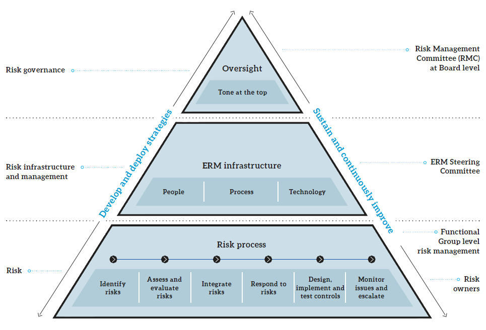

In the present context of highly competitive and volatile business environments, customer migration to other operators, increasing OTT Players’ offerings, fast changing technology, economic uncertainties etc., are threatening the continuity of SLT’s business. Further, cyberattacks are increasing and SLT’s network elements and systems are exposed to these risks. Therefore, it is vital for us to foresee business critical risks and those to be managed effectively. Having considered this context, the Board of Directors (BOD) has given direction to implement risk management process across the organisation in May 2011. In complying with the BOD’s direction; Enterprise Risk Management (ERM) process and ERM framework for SLT was developed in 2011. Reference has been made to the best practices of ERM such as ISO 31000, COSO and taken guidance from M/s Deloitte. Implementation of ERM process within SLT was started in early 2012 to identify and manage functional risks to create a risk management culture as being Business as Usual (BAU).
In September 2014, the Board of Directors took another step to keep ERM tone on by setting up of a Risk Management Committee (RMC) at Board level chaired by a Director to enhance and drive ERM process within SLT and scrutinise the business critical top risks at Board level. Today holding a RMC meeting parallel to meetings of the Board of Directors has become a practice. Inputs from overseas Directors, those who are having global experience and exposure are a great advantage to the process.
In addition, a Risk Management Steering Committee (RMSC) was also formed under the chairmanship of the Group CEO to assist the RMC in scrutinising the escalated risks from functional groups and to identify business critical risks. Thus, the ERM framework was modified with the guidance of the RMC.
Now risk management culture is at a matured stage at functional units as well as in project management at SLT. Over the past several years, since the introduction of ERM in 2011, ERM has become an important Business As Usual (BAU) process. ERM encourages senior executives to embed the risk management process into functional units. This will empower them to take appropriately, calculated positive risks (rewarded risks) and accept, mitigate, avoid or transfer the negative risks (unrewarded risks).
The following figure illustrates ERM organisation, its responsibilities and relevant scopes of responsible groups. This elaborates that due consideration should be given to enterprise-related risks when making all business decisions. The following table summarises top business critical risks – both Company specific and Industry specific – a brief description of each risk, their potential impact, our assessment of the level of severity of each risk and actions taken to mitigate them.

| No. | Type | Category | Risk description | Impact | Severity | Mitigation factors |
| 1. | Company | Business | Loss of business opportunities and revenue avenues due to competitors joining new submarine cable consortiums and providing international connectivity [e.g., landing of Bay of Bengal Gateway (BBG) Cable in Colombo in year 2016] | Threat for SLT’s wholesale business and potential revenue loss | High | Actions are in progress with revised strategies related to international connectivity and enterprise business |
| 2. | Company | Finance | Prevailing trend of Rupee depreciation leads to forex losses | Risk of forex translation losses high capital and operational costs in LKR terms | High | Seeking possible hedging options |
| 3. | Company | Legal | SLT is subject to a comprehensive range of legal obligations and as a result, SLT is exposed to many forms of legal risks – Custom duties and legal obligations on import of goods | Negative impact on brand image Financial risk | High | SLT was a party to several court and out-of-court proceedings. SLT handles legal proceedings and seeks support from external consultants to mitigate such risks as required |
| 4. | Company | Operational | Pressures to absorb the staff of the subsidiary SLT Human Capital Solutions (Private) Limited into SLT | Increased operational costs for SLT | High | Timely breaks in recruitment process to mitigate the increase of HR cost and enhancement of competencies of the recruited outsourced staff to improve their cooperative contribution |
| 5. | Industry | Business | Grey operators and OTT players coming up with substitutes is a threat to SLT’s products and services | Loss of revenue Limits the market growth opportunities Inability to achieve the expected returns on investment | High | Initiatives to introduce new business models and diversify to new areas. Lobbied with TRCSL and Media Ministry at joint industry level to curb grey operators in pay TV industry |
| 6. | Industry | Information security risk | Possible cyberattacks to business critical information systems and network elements may cripple SLT operations | Business continuity Loss of customer confidence Loss of revenue | High | Information Security (IS) policy is in place and implemented organisation wide. Information Security Steering Committees (ISSC) and Information Security Management Forum (ISMF) have been formed and major incidents are reported to them. Vulnerability assessments are continuously carried out and advice on threat/incident information are obtained from experts such as TechCERT and Sri Lanka CERT |
| 7. | Industry | Operational | Telecom industry experiences the need of new technological convergence and upgrading the networks to survive in the market. Prevailing competition structure pressurises the telco operators | Threat to growth of business and market share | High | SLT is investing on new technologies and converged infrastructure to effectively face the competition |
| 8. | Industry | Operational | Telco and non-telco business entities developing optical fibre networks, which leads to lower the returns on investment of National Backbone Network (NBN) developed by SLT aligning with national ICT development programme | Inadequate Returns on investment Loss of business opportunities Duplication of investment and increase in industry costs of network portion | Medium | SLT continuously deals with TRCSL and other operators to emphasis the objectives of NBN |
| 9. | Industry | Regulatory | Growth of wireless high speed broadband solutions (4G LTE) is exponential and non-availability of fair distribution of spectrum among operators has impacted competition adversely. | Unfair competition and disadvantage over broadband speeds | Medium | SLT consistently lobbies TRCSL on additional spectrum allocations |
| 10. | Industry | Regulatory | Drawing fibre in the last mile by telco service providers without legal rights is a threat to SLT’s wholesale and retail businesses | Threat for SLT’s business. Revenue loss | Medium | SLT has raised its concerns to TRCSL and placed a complaint against the license violation |
| 11. | Industry | Regulatory | Absence of a legal framework to protect telco operators being charged/taxed by local authorities/other Government agencies without consultation of the regulator on development of telecommunication infrastructure. (e.g., Thoroughfare Act, Central Environment Act etc.) | Burden of additional charges and taxes on network development becomes a constraint for development of infrastructure in green area leading to incur additional costs and unfair and unbalanced cost structures in the industry | Low | SLT continuously lobbies with the RDA, TRCSL and other relevant Government authorities |
Please refer to note 4 for information on SLT’s financial risk management activities.